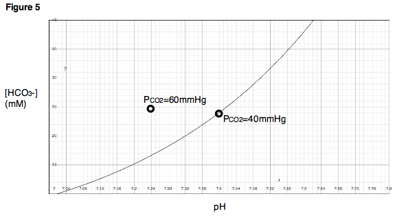
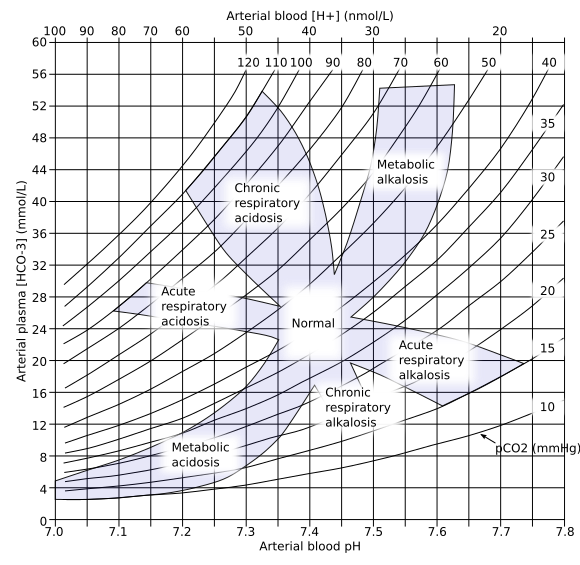

Três números contam uma história coerente. Aprenda a lê-la — e depois teste qualquer gasometria na bancada que calcula. Para a Dani.


Nos três primeiros módulos você aprendeu a mover o ar, seguir o oxigênio e entender o encontro ar-sangue. A gasometria é onde tudo isso vira um exame que você lê em segundos.
O segredo é parar de decorar valores soltos e ler pH, pCO₂ e HCO₃⁻ como uma história: quem causou, quem compensou, e quando há um segundo distúrbio escondido.
Digite os três números da gasometria. Eletrólitos são opcionais, mas habilitam ânion-gap e delta-delta.
Ferramenta didática. Não substitui história clínica, tempo de instalação, lactato, eletrólitos completos, albumina, suspeita toxicológica ou julgamento à beira do leito.